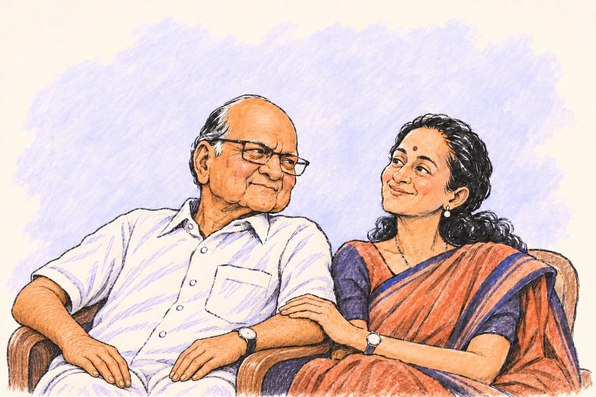

Maharashtra
How Sharad Pawar redrew the map for his daughter
This is the story of three letters, one plan, and the map that made Pawar country.
Written byA final-year undergraduate with interests in electoral politics, political geography and delimitation exercises. On X as @4point2KILOyear.

In the 2004 general election, the Nationalist Congress Party nearly lost Satara. The margin was 3,957 votes, a number so small that a few polling stations could have decided it. Five years later, in the first general election fought on the new map, the same party's candidate won Satara by 2,97,515 votes. In between, two things happened: 26/11, and the boundaries were redrawn.1
General election, 2009
3,36,831 Baramati
3,14,459 Madha
2,97,515 SataraSatara was not alone. In the general election of 2009, the three largest winning margins in all of Maharashtra belonged to the NCP, and all three seats sat side by side on the Deccan plateau south of Pune. In Baramati, Sharad Pawar's daughter Supriya Sule won her first Lok Sabha election by 3,36,831 votes. In Madha, a constituency that had not existed before that year, Pawar himself won by 3,14,459. All three seats had been drawn or redrawn by the Delimitation Commission's Order of July 2006, which came into force in 2008.1
It is worth asking how a seat that a party nearly loses becomes a seat it wins by three lakh votes, and the answer has something to do with three letters written to the Delimitation Commission. The Commission appoints ten associate members in each state during the exercise. In Maharashtra, six of the ten objected to the Commission's draft. In their objection letters they sent a plan covering all four Lok Sabha seats in Pune district, submitted by three NCP members. The 2008 final Order followed it as it was. This essay follows the six seats of this region on the old and the new maps, and asks of each one a simple question: when the lines moved, whose position did they strengthen, and whose did they weaken?
How a map gets made
India redraws its parliamentary constituencies from time to time so that each MP and MLA represents roughly the same number of people. The work is done by a Delimitation Commission, a body of retired judges that operates in a peculiar twilight: it publishes a draft, hears objections, and then issues a final Order that cannot be challenged in any court.2 The MPs and MLAs of the state sit on the Commission as associate members, and so does any member of the public who cares to write in.
Since 1976 the number of seats each state sends to the Lok Sabha, and the number in its own legislative assembly, has been frozen on the 1971 Census; in 2001 that freeze was carried forward another twenty-five years, to the first census after 2026. The Commission of 2002 could move the lines inside Maharashtra; it could not change that there were 48 Lok Sabha seats and 288 assembly seats.2 Everything it did in the state was therefore a trade. A seat that gained people took them from the seat next door.
The draft: 28 March 2006
The final Order: 31 July 2006
In force from 2008For Maharashtra, the draft came out on 28 March 2006. The final Order came on 31 July 2006. Between those two dates, 10 of the state's 48 Lok Sabha seats changed shape. The map was drawn while the Congress and the NCP governed Maharashtra together, and while Sharad Pawar sat in Delhi as the Union agriculture minister, the most powerful Maratha in the country, and the man whose home turf was, quite literally, the ground under the map.
The three letters
Six associate members filed objections to the draft, ten proposals in all. Every proposal from the Shiv Sena was rejected. One plan, covering the four Lok Sabha seats of Pune district, was sent in three separate times by three separate members, and the final Order followed it as it was.
The senders make an interesting group. Shriniwas Patil was the NCP's MP for Karad, a party colleague of Pawar's, and he sent the plan with a map attached. Ramdas Athawale was the MP for Pandharpur, a Dalit leader of the Republican Party whose faction was an ally of the ruling Congress and NCP, and he sent the same plan in a letter of his own. The third sender was Harshvardhan Deshmukh, an MLA from Morshi in Vidarbha who had been elected in the state election of 2004 for a small regional party, and who stood on the NCP's ticket at the next two state elections, in 2009 and 2014.3
The plan asked for a Baramati built from Daund, Indapur, Baramati, Purandar, Bhor and Khadakwasla, and a new seat called Maval assembled from Pimpri and Chinchwad and three coastal segments of Raigad. The letters spoke the language that boundary commissions everywhere expect to hear: compactness, towns kept with towns, rural areas kept together, a Baramati that was, in Deshmukh's phrase, “totally having rural face.”
The letters sent by the NCP members objected that the Commission's draft Shirur ran about 216 kilometres from tip to tip, which is difficult for an MP to cover. The Baramati the letters proposed ran 203 kilometres, one of the longest seats in the state, against 153 in the Commission's own draft. Length was an objection in Shirur. It was not an objection in Baramati.
The letters objected that the draft split Pimpri-Chinchwad, and then proposed a plan that split it anyway. And the Baramati they called rural was not entirely rural, since three of its segments, Khadakwasla, Purandar and Bhor, are part of Pune city wards.
Share living in towns
54% the Commission's draft Baramati
25% the Baramati the letters proposedWhat the NCP's submitted plan actually did to Baramati was plainer than the language around it. It took out the two segments that belonged wholly to the cities, and it put in two rural tahsils, Daund and Indapur. In the Commission's draft, 54% of Baramati's people lived in towns. In the Baramati the letters proposed, 25% did. A seat that leaned toward the family became a seat that leaned harder, and the lean was dressed up as geography.
The Commission's final Order matched the plan for Baramati and Maval exactly, segment for segment, and matched the Pune and Shirur portions with one change, Hadapsar, which this essay comes to in a moment. Of all the proposals filed from all the parties of the state, the one the Commission followed was the one sent in three times by three men on the NCP's side of the aisle.4
The seat that was asked for
To measure what a redrawn seat is worth, this essay uses a simple yardstick. Take the votes cast for the two great rival alliances of the region, the Congress and the NCP on one side, the BJP and the Shiv Sena on the other, and ask what share of the two together went to the first. Each Lok Sabha seat is assembled from six assembly segments, the state-legislature constituencies, so a commission's real choice is which six go together.
Baramati on the 2004 votes
66% the Commission's draft
72% the final Order
a lead of 3,39,272Carried onto the new lines, the general election of 2004, the last one fought before the map, gave the Commission's draft Baramati 66% of that share. The final Baramati gave it 72%. The draft's Baramati was already the safest seat in Maharashtra. The change did not rescue the seat. It added 1,36,850 votes to its lead, taking it to 3,39,272, and a seat that could not be lost was made a seat that could not be lost even in a bad year.
How unusual was the shape it was given? The twenty-four assembly segments around Pune can be sorted into four connected seats in 26,154 different ways, and a computer has checked every one of them. In every single arrangement, the seat containing Baramati stays with the Congress and NCP. The party would have won it under almost any map a commission could draw. Only about one arrangement in five, though, gives it a lead as large as the one it got.5
Supriya Sule has held Baramati ever since the map was drawn, through the general elections of 2009, 2014, 2019 and 2024, and the family has not needed the state's permission, or anyone's, to keep it. The proof of what the drawing was worth arrived in the general election of 2014, the worst year the Congress and NCP have ever had. Counted on the old Baramati's ground, the very same votes would have elected the BJP and Shiv Sena. The lines alone decided the seat that year, one of only four in the state where that was true.6
The seat that paid
The Order abolished Khed, the Shiv Sena's seat, and built a new one called Shirur from its remains. Forty-five per cent of the new seat's people came from old Khed, 37% from old Baramati, which is to say from Pawar country, and the rest from Pune. On the 2004 votes the new seat was a little kinder to the Congress and NCP than old Khed had been. So far, the map was working for the alliance.
Then came Hadapsar. Pune city had grown too large to fit into one seat, and its leftover wards had to be placed somewhere. The letters had kept the city's Hadapsar block inside Pune. The Commission, in its one departure from the letters, sent Hadapsar to rural Shirur instead: a block of city wards whose neighbours to the south and east vote in Purandar, inside Baramati. That one line left Baramati exactly as the three letters had asked, and it cut the Congress–NCP lead in Shirur to 39,379.6
There was a simple alternative, so simple that a draftsman could have drawn it in an afternoon. Put Hadapsar into Baramati, beside its neighbour Purandar, and give Shirur Daund, a whole rural tahsil next door. Both seats stay in one piece, Baramati is no longer than it already is, and the swap moves about 60,000 votes of cushion from the seat that could not lose to the seat that might. It was neater and fairer than the line actually drawn. It was not drawn.
The draft, then the Order
Shirur 1,65,146 → 39,379
Baramati 2,02,422 → 3,39,272The arithmetic of the choice deserves to be stated plainly. The Commission's own draft gave the Congress and NCP a lead of 1,65,146 in Shirur and 2,02,422 in Baramati. The final map cut Shirur's lead to 39,379 and raised Baramati's to 3,39,272, the largest in the state. Votes that would have made a marginal seat safe were piled into the one seat the alliance could not lose.
Did the line cost the alliance Shirur? No, and honesty requires saying so: Adhalrao Patil of the Shiv Sena won it in the general elections of 2009 and 2014 by margins no boundary could explain, and Amol Kolhe of the NCP took it in 2019 and held it in 2024. But on paper, in the years when the map was new, the family's safe seat next door had nine times the margin to spare.
A seat built to order
Madha did not exist before 2008. The Commission built it from four Solapur segments and two from Satara, splitting three tahsils to make the pieces fit, and the seat it made is the least compact in Maharashtra. About half its voters in the general election of 2009 came from the ground of Pandharpur, the reserved seat the Order abolished, and a third from old Satara. Pawar stood there and won by 3,14,459, leaving Baramati, which he had held since its creation, to his daughter.
Arrange the segments around Solapur and Satara almost any other way and the story does not happen. About one grouping in a thousand produces two margins that large in the same year, and those are the groupings with Madha exactly as drawn.5
The men who paid for the building were two of Pawar's oldest companions. Athawale, the ally who had mailed in the Baramati plan, lost his reserved seat altogether, and lost again when he followed the reservation to Shirdi in the general election of 2009. Vijaysinh Mohite-Patil, a veteran NCP leader and former Deputy Chief Minister who had won his assembly seat of Malshiras by over a lakh votes in the state election of 2004, found his seat reserved for Scheduled Castes while the new Lok Sabha seat built around his home ground went to Pawar. He reached Parliament only in the general election of 2014, after Pawar had stopped contesting, through Madha itself, and his son Dhairyasheel holds it today.
The landslide spent
Satara's story is the quietest and, in its way, the most instructive. The NCP had held it in the general election of 2004 by 3,957 votes, and held neighbouring Karad by 1,96,730. The Order kept the name Satara and abolished Karad, rebuilding the marginal seat on the landslide seat's ground. About two-thirds of the new Satara's Congress–NCP votes came from old Karad. On the 2004 votes the new seat was ten percentage points safer for the party than the old one. A seat that might have been lost had been filled up, quietly and lawfully, with the strength of a seat that could not be. The Shiv Sena's Subhash Desai had filed an alternative that kept a Karad seat and left Satara a genuine contest. The Commission declined it.6
Udayanraje Bhosale won the new Satara by 2,97,515 in the general election of 2009 and held it for a decade, through a resignation, a Lok Sabha by-election and a change of party, before winning the seat back in the general election of 2024. And Shriniwas Patil, the man who had sent the Baramati plan with a map attached, watched his own seat vanish from the map. He stayed out of the Lok Sabha for ten years and returned only through the Satara by-election of October 2019, which he won on his old Karad ground, leading in the very segments his redraw had spent. He had drawn one seat beautifully, and lost the other. Of the three men who sent the letters, the two with the most to lose from the new map were the two who lost the most, and the third went on to stand on the family's ticket.
What the record shows
Follow the people across the elections and two groups emerge. One held still. Supriya Sule won Baramati four times, and Dilip Walse Patil, the one supporter Shriniwas Patil's letter had named for the plan, won his assembly seat at all five state elections from 2009 to 2024. The other group kept moving. Adhalrao lost Shirur. Athawale lost. Patil lost his seat and waited a decade. Mohite-Patil was moved off his own ground. Harshvardhan Patil of Indapur, whose segment the letters moved into Baramati, lost his assembly seat three times running.
The tests a reader should demand before suspecting design are all passed. Nothing in law or arithmetic required the Baramati change; the Commission's own draft did otherwise. The change helped one side, and it decided results, in the general election of 2014 beyond argument. Its worth could be measured on the last votes cast before the map existed. And the shape it took was the shape three members on that side had asked for, in writing, with a map.
What the record cannot show matters just as much. The Commission's discussions and its reasons are not public, so no one can say who inside it decided, or why. Deshmukh's later NCP tickets sit beside his letter in time, and nothing in the record says one was given for the other. Not every seat was drawn to order; the abolition of Karad and Pandharpur, the decisive step in the south, was already in the draft. The landslides of the general election of 2009 were not the lines alone, for who stood mattered too. And the clearest case of all is Baramati: the tilt this essay finds is toward one family's seats and the people closest to them, not toward the NCP as a party. It would be a lazier and a falser story to pretend otherwise.
A reader may still object that this is a poor way to draw a map for a party. A margin of three lakh is votes doing nothing; spread across the seats next door they might have won more of them. But the freeze fixed the number of seats, so what Baramati gained a neighbour had to lose, and Shirur did. And the Nationalist Congress Party in 2006 was not playing the same game as a national party. It was seven years old, almost all its strength lay in western Maharashtra, and it had been founded and was led by Sharad Pawar, with his daughter newly in the Rajya Sabha and his nephew long established in Baramati. Spreading support thin wins more seats while the wave holds and loses them when it turns; concentrating it makes a few close to unlosable, and those few were the family’s. Which of the two a party prefers is a question of motive, and motive is what the record does not hold.
The next map
Seats must follow the people, or representation stops meaning anything. What must change is who gets to watch the drawing. In 2006, every step that mattered was on paper: the draft, the letters, the final Order. What nobody could see before the map was final was what a change like Baramati's was worth, and whose seat would pay for it. The Commission gave no reasons for its changes, and it was not required to give any.
People per Lok Sabha seat
10 lakh on the 1971 Census
26 lakh on the 2026 projectionThe next map is closer than most people realise. The Constitution holds the current lines until the figures of the first census after 2026 are published, and Census 2027 is under way. Seats were last shared among the states on the 1971 Census, when a Lok Sabha seat stood for about ten lakh people; on the official projection for 2026, one stands for about twenty-six lakh. An attempt to change the rules fell short in the Lok Sabha in April 2026. Whatever rules the next Commission works under, its lines will shape elections for a generation.
Baramati shows how much a few segments can move, and who pays when they do. Somewhere, as you read this, letters are probably already being drafted.
■
Notes
- Election Commission of India, Statistical Reports, General Elections 2004 and 2009 (Lok Sabha), Satara and Baramati. ↩
- Delimitation Act, 2002, s. 10: the final Order of the Commission “shall have the force of law and shall not be called in question in any court.” The freeze: the 42nd Amendment (1976) fixed each state’s share of Lok Sabha seats, and the size of each state assembly, on the 1971 Census (Articles 81, 82 and 170); the 84th (2001) carried it to the first census after 2026 while allowing constituencies inside each state to be redrawn, and the 87th (2003) made the 2001 Census the basis for that redrawing. ↩
- Objections to the Delimitation Commission's draft Order of 28 March 2006, filed by Shriniwas Patil (MP, Karad), Ramdas Athawale (MP, Pandharpur) and Harshvardhan Deshmukh (MLA, Morshi); final Order, 31 July 2006 (Order No. 26). ↩
- The final Order's Baramati (Daund, Indapur, Baramati, Purandar, Bhor, Khadakwasla) and Maval match the three members' proposal segment for segment. ↩
- Method note M-A. The 26,154 connected groupings of the 24 assembly segments around Pune, counted exhaustively, and 14,049 around Solapur and Satara. They follow the rules a commission must (whole segments, six per seat, each seat in one piece) but not population balance or district lines, so they are possible maps, not lawful ones. Measured from each of its six segments in turn, only Baramati stays in the top fifth. The full note, with the tables behind it, is available on request. ↩
- Method notes M-B and M-D. All 2004 figures on 2008 boundaries are estimates: the real 2004 votes re-sorted inside the new lines, spread by where people live, nudged a quarter of the way toward how each area leaned in 2009, and always adding back to exactly what was counted. The split was shaken at random 2,000 times; in every run the Daund–Hadapsar swap cuts Baramati's lead and raises Shirur's. A seat counts as decided by the lines only when the two counts disagree, the result survives booths being deliberately misplaced in 100 repeat runs, and it matches the real winner. The full note, with the tables behind it, is available on request. ↩
- Method note M-C. No official coordinates exist for polling stations from 2009 to 2024, so they were placed for this analysis from the Election Commission's 2017 locator, Census 2001 village outlines and Susewind (2014). A booth lands in the right old seat about nine times in ten: enough for seat totals, not for single booths. The full note, with the tables behind it, is available on request. ↩
Sources: Election Commission of India results and Form 20; the Delimitation Orders of 1976 and 2008 and the Commission's Order No. 26; DataMeet community outlines; Census 2001; GHSL 2010 population. The tables and code behind every figure are available from the author on request.
Illustration by Preksha Jain.